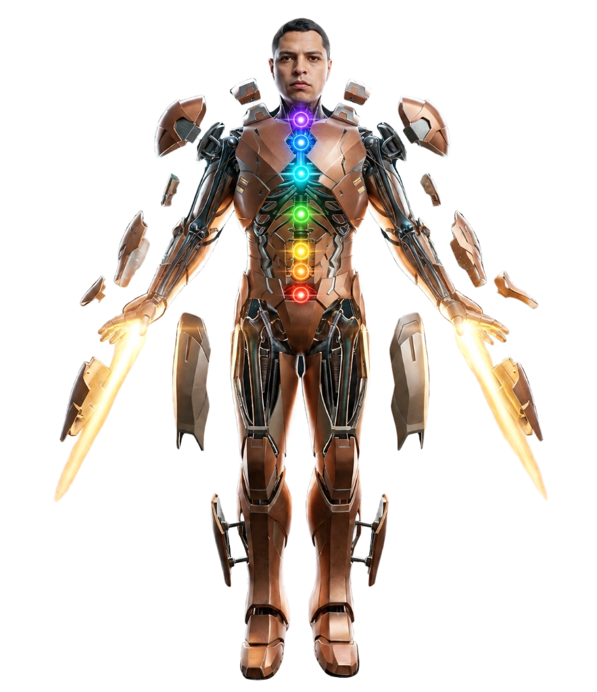

⚡
THIAGO NASCIMENTO
// CYBER-CHAKRA CLONE 100% FIEL
|
Cards com Expansão Direta + Linhas de Luz Reativas
SEÇÃO 02 — ENGENHARIA & STACK // O MOTOR DE CONSTRUÇÃO
CYBER-CHAKRA ARCHITECTURE
O Rosto de Thiago Nascimento com a Anatomia Cyberware de 7 Chakras
